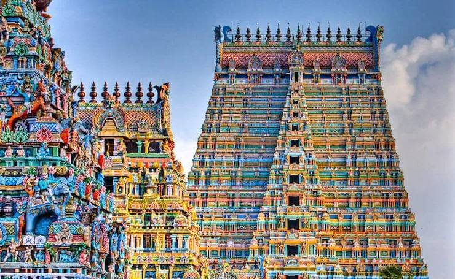

Meenakshi Amman temple

Dedicated to Goddess Parvati in the form of Meenakshi and her consort, Lord Shiva in the form of Lord Sundareswarar, the Meenakshi Amman Temple is one of the most ancient and famous temples not only in Tamil Nadu but, in entire India. According to historical and archaeological records, the temple was originally built around 6th century AD and the major portion of it was damaged in 14th century by the Muslim invaders in India. The present structure of the temple dates back to the 16th century when it was again restored to its pristine glory by
go to menu page
adi Kumbeswarar temple Kumbakonam

The grandeur of Chola dynasty is still intact in the form of divine Adi Kumbeswarar temple. It’s an exquisite Dravidian style masterpiece which was renovated by Govinda Dikshitar, chief of Achutha Nayakar of Thanjavur in 16th century AD. The temple is dedicated to Lord Shiva. Holy Domain to embrace Ethereal The temple of Adi Kumbeswarar is also considered as the 26th Paadal Petra Sthalam during Chola Period. Devotees from all over the world take bath in the Potramarai tank during Mahamaham festival which is celebrated once in every 12 years (It is called as Kumbh Mela in North). The divine Shiva Lingam will blow your heart away, it is narrow at the top like a needle and broad at the bottom. On the left side of Kumbeswarar, his consort Goddess Mangalambika showers her divine blessings to the devotees. Apart from the main shrines, shrines of Lord Murugan, Lord Ganesha, Lord Kiratamurati and others adorn the temple premises.
go to menu page
Brihadeeswarar temple Thanjavur

The ‘Brihadeeswarar Temple’ is a delightful abode of Lord Shiva and is located in the Thanjavur district of Tamil Nadu. It is one of the largest temples in India. This brilliant creation of the Chola dynasty in the 11th century AD stands tall as a testimony to the opulence and grandeur of the Chola rulers. Today, the temple enjoys the status of a UNESCO World Heritage Site under the list of ‘Great Living Chola Temples’ and is visited by hundreds of thousands of devotees and tourists every year. Architecture Glory The temple tower is 216 ft long which is considered as the tallest temple tower in the world. The ‘Kumbam’ or the apex structure on top of the Vimana, weighing 80 tonnes carved from a single granite, just adds to the magnificence of the entire structure. Also, the Brihadeeswarar Temple has another feather to it with an acclaim of being the world’s first temple completely built from granite. With no granite quarry within 100 km. radius of the temple, a visit to this temple definitely makes one wonder about the logistics and efforts that must have been required to transport tonnes of granite to this site.
go to menu page
sri Ranganathaswamy temple Srirangam
Dedicated to Lord Vishnu, the ‘Ranganathaswamy Temple’ located on the Srirangam Island of the Tiruchirappalli city in Tamilnadu, is another masterpiece of Dravidian architecture. Spread across an area of over 150 acres, the temple has 49 sub-shrines and is dotted with 21 brilliantly carved Gopurams (tower gateways) with the main or the ‘RajaGopuram’ standing tall at 236 ft. making it the tallest Gopurams in Asia. Temple Township It is also only one of its kind shrines where you will find a unique mix of a temple and township co-existing; a part of the temple is actually dedicated to temple activities whereas the remaining portion serves as a township for humans. The temple also has 7 prakaras or enclosures with the presiding deity of Lord Vishnu in the form of Lord Ranganathaswamy reclining on five-headed serpent, enshrined in the innermost prakara. The tower above the innermost prakara is in the shape of ‘Om’ and is completely plated in Gold. Counted as the first amongst the 108 ‘Divya Desams’ or holy abodes of Lord Vishnu, the temple draws uncountable pilgrims and tourists every year.
go to menu page
sri Rajagopala Swamy temple Mannargudi
Located in the town of Mannargudi the divine temple of Rajagopala Swamy is one of the most popular shrines of Lord Krishna. The temple is also known as Guruvayoor by Hindus. It is one of the most popular vaishnavite temples in India. What’s the Appeal? Mesmerizing stone Inscriptions, 154ft gateway tower – Rajagopuram and the largest temple tank Haridra Nadhi gives the most relaxing vibes to rejuvenate the soul and mind-boggling views for visual treat. Famous Festival The most popular festival of Sri Rajagopala Swamy Temple is the Chariot Festival which is held in the month of June-July. In the Legends- Reason behind the Tusk in the left hand of Lord Krishna According to a legend Lord Krishna killed a wild elephant named Kuvalaya Peetam who was actually Kansa (Lord Krishna’s maternal Uncle). He wanted to kill Lord Krishna’s elder brother Balrama in the form of an elephant but before that Lord Krishna killed the wild elephant and held one enlarged tusk in his left hand.
go to menu page